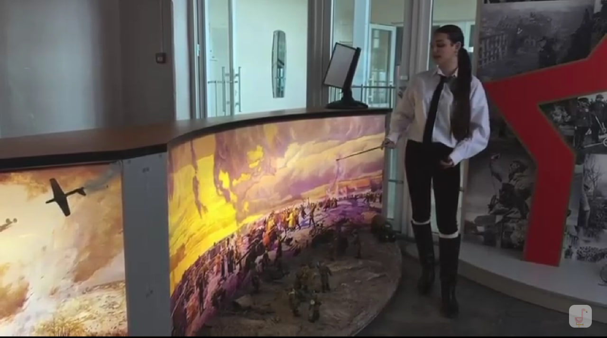

Память, которая объединяет поколения.
Великая Отечественная война
Крейзер Я.Г., путь 51-й армии и история полуострова.
Специальная военная операция
Фотографии, документы, история подвига наших дней
Крымская весна
Воссоединение Крыма с Россией, история полуострова
Экспозиции музея
Великая Отечественная война
Великая Отечественная война началась 22 июня 1941 года с вторжения нацистской Германии и её союзников на территорию Советского Союза.
Завершилась 9 мая 1945 года полным разгромом нацистской Германии и подписанием акта о безоговорочной капитуляции. Война унесла жизни около 27 миллионов советских граждан, стала самым кровопролитным конфликтом в истории человечества. Ключевые сражения: битва за Москву, Сталинградская битва, Курская дуга, снятие блокады Ленинграда, Берлинская операция. В памяти народной навсегда останутся подвиги защитников Брестской крепости, панфиловцев, молодогвардейцев и миллионов других героев, отдавших жизни за свободу Родины.
Контрнаступление советских войск под Москвой


Непокоренный Сталинград
Штурм Сапун-горы


Яков Григорьевич Крейзер
Яков Григорьевич Крейзер (1905-1969) — выдающийся советский военачальник, генерал армии, Герой Советского Союза. Имя которого носит наша школа.
Родился 4 ноября 1905 года в Воронеже. В Красной Армии с 1921 года. Окончил пехотную школу, курсы «Выстрел» и Военную академию им. Фрунзе. Великую Отечественную войну встретил в должности командира 1-й мотострелковой дивизии. В июле 1941 года дивизия под его командованием остановила наступление танковой группы Гудериана на Березине. 22 июля 1941 года Я.Г. Крейзеру было присвоено звание Героя Советского Союза — это был первый случай присвоения звания Героя командиру стрелковой дивизии в годы войны. В дальнейшем командовал армиями на Западном, Юго-Западном, Сталинградском и 1-м Прибалтийском фронтах. Участвовал в обороне Москвы, Сталинградской битве, освобождении Прибалтики. После войны продолжал службу, был генерал-инспектором Министерства обороны. Награжден 5 орденами Ленина, 4 орденами Красного Знамени, орденами Суворова и Кутузова. Умер 29 ноября 1969 года.


51-я армия: Боевой путь
51-я отдельная армия была сформирована в Крыму в августе 1941 года для обороны полуострова.
51-я армия сыграла ключевую роль в обороне Крыма и Севастополя. Армия была сформирована на базе 9-го стрелкового корпуса и включала в себя несколько стрелковых и кавалерийских дивизий. В октябре 1941 года армия вела тяжелые оборонительные бои на Перекопском перешейке, сдерживая наступление 11-й немецкой армии Манштейна. После прорыва немецких войск в Крым, части 51-й армии отошли к Севастополю и Керчи. В декабре 1941 года армия участвовала в Керченско-Феодосийской десантной операции. В мае 1942 года понесла тяжелые потери в ходе обороны Керченского полуострова. Остатки армии были эвакуированы на Тамань. Впоследствии армия была переформирована и участвовала в Сталинградской битве, освобождении Донбасса, Крыма и Прибалтики. За годы войны 51-я армия прошла славный боевой путь от Крыма до Курляндии.


Крым в годы Великой Отечественной
Крым стал ареной ожесточенных сражений с первых дней войны. Оборона Севастополя длилась 250 дней.
Великая Отечественная война стала тяжелейшим испытанием для Крыма. Боевые действия на полуострове начались в сентябре 1941 года, когда немецкие войска ворвались в Крым. Героическая оборона Севастополя продолжалась 250 дней — с 30 октября 1941 по 4 июля 1942 года. Город держался, сковав крупные силы противника. В мае 1942 года произошла трагедия Керченского фронта, но борьба продолжалась. Керчь дважды была оккупирована, дважды освобождалась. В катакомбах Аджимушкая держали оборону советские воины. В апреле-мае 1944 года в ходе Крымской наступательной операции полуостров был полностью освобожден. За годы оккупации фашисты уничтожили более 130 тысяч мирных жителей, угнали на работу в Германию около 85 тысяч человек. Крым был награжден орденом Ленина, а города-герои Керчь и Севастополь носят это высокое звание.


Специальная военная операция
Специальная военная операция началась 24 февраля 2022 года.
Целями операции были объявлены защита населения Донбасса, демилитаризация и денацификация Украины. Конфликт стал продолжением противостояния, начавшегося в 2014 году после событий Евромайдана и воссоединения Крыма с Россией. В ходе операции российские военнослужащие проявляют мужество и героизм, освобождая города и населенные пункты. Многие бойцы удостоены государственных наград, в том числе звания Героя России. Особую роль играют военные корреспонденты, волонтеры и медики, которые ежедневно рискуют жизнями ради помощи фронту и мирному населению освобожденных территорий.


Крымская весна
Крымская весна — исторические события февраля-марта 2014 года, когда после государственного переворота на Украине жители Крыма и Севастополя отказались признавать новую власть.
16 марта 2014 года состоялся референдум о статусе полуострова, на котором 96,77% избирателей Крыма и 95,6% избирателей Севастополя проголосовали за воссоединение с Россией. 18 марта 2014 года был подписан договор о принятии Республики Крым и города Севастополя в состав Российской Федерации. Это событие стало восстановлением исторической справедливости и возвращением исконно русских земель домой. За годы в составе России полуостров преобразился: построен Крымский мост, новый аэропорт, трасса «Таврида», электростанции и множество социальных объектов.


Видеоэкскурсия по музею
